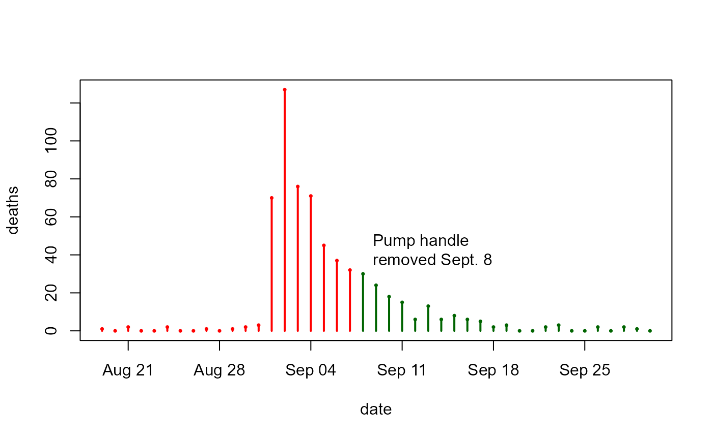

John Snow's Map and Data on the 1854 London Cholera Outbreak
Snow.RdThe Snow data consists of the relevant 1854 London streets, the location of 578
deaths from cholera, and the position of 13 water pumps (wells)
that can be used to re-create John Snow's map showing deaths from
cholera in the area surrounding Broad Street, London in the 1854 outbreak.
Another data frame provides boundaries of a tessellation of the map into
Thiessen (Voronoi) regions which include all cholera deaths nearer to
a given pump than to any other.
The apocryphal story of the significance of Snow's map is that, by closing the Broad Street pump (by removing its handle), Dr. Snow stopped the epidemic, and demonstrated that cholera is a water borne disease. The method of contagion of cholera was not previously understood. Snow's map is the most famous and classical example in the field of medical cartography, even if it didn't happen exactly this way. (the apocryphal part is that the epidemic ended when the pump handle was removed.) At any rate, the map, together with various statistical annotations, is compelling because it points to the Broad Street pump as the source of the outbreak.
Format
Snow.deaths: A data frame with 578 observations on the following 3
variables, giving the address of a person who died from cholera. When many
points are associated with a single street address, they are "stacked" in a
line away from the street so that they are more easily visualized. This is how
they are displayed on John Snow's original map. The dates of the deaths are
not individually recorded in this data set.
caseSequential case number, in some arbitrary, randomized order
xx coordinate
yy coordinate
Snow.pumps: A data frame with 13 observations on the following 4 variables,
giving the locations of water pumps within the boundaries of the map.
pumppump number
labelpump label:
Briddle StBroad St...Warwickxx coordinate
yy coordinate
Snow.streets: A data frame with 1241 observations on the following 4 variables,
giving coordinates used to draw the 528 street segment lines within the boundaries of the map.
The map is created by drawing lines connecting the n points in each street segment.
streetstreet segment number:
1:528nnumber of points in this street line segment
xx coordinate
yy coordinate
Snow.polygons: A list of 13 data frames, giving the vertices of
Thiessen (Voronoi) polygons containing each pump. Their
boundaries define the area that is closest to each pump relative to all other
pumps. They are mathematically defined by the perpendicular bisectors of the
lines between all pumps. Each data frame contains:
xx coordinate
yy coordinate
Snow.deaths2: An alternative version of Snow.deaths correcting some possible
duplicate and missing cases, as described in vignette("Snow_deaths-duplicates").
Snow.dates: A data frame of 44 observations and 3 variables from Table 1
of Snow (1855), giving the number of fatal attacks and number of deaths by date from Aug. 19 -- Sept. 30, 1854. There are a total of 616 deaths represented in both
columns attacks and deaths; of these, the date of the attack is unknown
for 45 cases.
Details
The scale of the source map is approx. 1:2000. The (x, y) coordinate units are 100 meters,
with an arbitrary origin.
Of the data in the Snow.dates table, Snow says,
“The deaths in the above table are compiled from the sources mentioned above in describing the map; but some deaths which were omitted from the map on account of the number of the house not being known, are included in the table.”
One limitation of these data sets is the lack of exact street addresses. Another is the lack of any data that would serve as a population denominator to allow for a comparison of mortality rates in the Broad Street pump area as opposed to others. See Koch (2000), Koch (2004), Koch & Denike (2009) and Tufte (1999), p. 27-37, for further discussion.
Source
Tobler, W. (1994). Snow's Cholera Map,
http://www.ncgia.ucsb.edu/pubs/snow/snow.html; data files were obtained from
http://ncgia.ucsb.edu/Publications/Software/cholera/, but these sites
seem to be down.
The data in these files were first digitized in 1992 by Rusty Dodson of the NCGIA, Santa Barbara, from the map included in the book by John Snow: "Snow on Cholera...", London, Oxford University Press, 1936.
References
Koch, T. (2000). Cartographies of Disease: Maps, Mapping, and Medicine. ESRI Press. ISBN: 9781589481206.
Koch, T. (2004). The Map as Intent: Variations on the Theme of John Snow Cartographica, 39 (4), 1-14.
Koch, T. and Denike, K. (2009). Crediting his critics' concerns: Remaking John Snow's map of Broad Street cholera, 1854. Social Science & Medicine 69, 1246-1251.
Snow, J. (1885). On the Mode of Communication of Cholera. London: John Churchill. https://www.ph.ucla.edu/epi/snow/snowbook.html.
Tufte, E. (1997). Visual Explanations. Cheshire, CT: Graphics Press.
Examples
data(Snow.deaths)
data(Snow.pumps)
data(Snow.streets)
data(Snow.polygons)
data(Snow.deaths)
## Plot deaths over time
require(lubridate)
#> Loading required package: lubridate
#>
#> Attaching package: 'lubridate'
#> The following object is masked from 'package:reshape':
#>
#> stamp
#> The following objects are masked from 'package:base':
#>
#> date, intersect, setdiff, union
clr <- ifelse(Snow.dates$date < mdy("09/08/1854"), "red", "darkgreen")
plot(deaths ~ date, data=Snow.dates, type="h", lwd=2, col=clr)
points(deaths ~ date, data=Snow.dates, cex=0.5, pch=16, col=clr)
text( mdy("09/08/1854"), 40, "Pump handle\nremoved Sept. 8", pos=4)

## draw Snow's map and data
SnowMap()
 # add polygons
SnowMap(polygons=TRUE, main="Snow's Cholera Map with Pump Polygons")
# add polygons
SnowMap(polygons=TRUE, main="Snow's Cholera Map with Pump Polygons")
 # zoom in a bit, and show density estimate
SnowMap(xlim=c(7.5,16.5), ylim=c(7,16), polygons=TRUE, density=TRUE,
main="Snow's Cholera Map, Annotated")
## re-do this the sp way... [thx: Stephane Dray]
library(sp)
# streets
slist <- split(Snow.streets[,c("x","y")],as.factor(Snow.streets[,"street"]))
Ll1 <- lapply(slist,Line)
Lsl1 <- Lines(Ll1,"Street")
Snow.streets.sp <- SpatialLines(list(Lsl1))
plot(Snow.streets.sp, col="gray")
title(main="Snow's Cholera Map of London (sp)")
# deaths
Snow.deaths.sp = SpatialPoints(Snow.deaths[,c("x","y")])
plot(Snow.deaths.sp, add=TRUE, col ='red', pch=15, cex=0.6)
# pumps
spp <- SpatialPoints(Snow.pumps[,c("x","y")])
Snow.pumps.sp <- SpatialPointsDataFrame(spp,Snow.pumps[,c("x","y")])
plot(Snow.pumps.sp, add=TRUE, col='blue', pch=17, cex=1.5)
text(Snow.pumps[,c("x","y")], labels=Snow.pumps$label, pos=1, cex=0.8)
# zoom in a bit, and show density estimate
SnowMap(xlim=c(7.5,16.5), ylim=c(7,16), polygons=TRUE, density=TRUE,
main="Snow's Cholera Map, Annotated")
## re-do this the sp way... [thx: Stephane Dray]
library(sp)
# streets
slist <- split(Snow.streets[,c("x","y")],as.factor(Snow.streets[,"street"]))
Ll1 <- lapply(slist,Line)
Lsl1 <- Lines(Ll1,"Street")
Snow.streets.sp <- SpatialLines(list(Lsl1))
plot(Snow.streets.sp, col="gray")
title(main="Snow's Cholera Map of London (sp)")
# deaths
Snow.deaths.sp = SpatialPoints(Snow.deaths[,c("x","y")])
plot(Snow.deaths.sp, add=TRUE, col ='red', pch=15, cex=0.6)
# pumps
spp <- SpatialPoints(Snow.pumps[,c("x","y")])
Snow.pumps.sp <- SpatialPointsDataFrame(spp,Snow.pumps[,c("x","y")])
plot(Snow.pumps.sp, add=TRUE, col='blue', pch=17, cex=1.5)
text(Snow.pumps[,c("x","y")], labels=Snow.pumps$label, pos=1, cex=0.8)